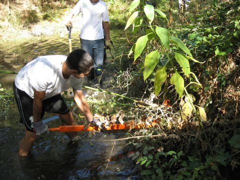
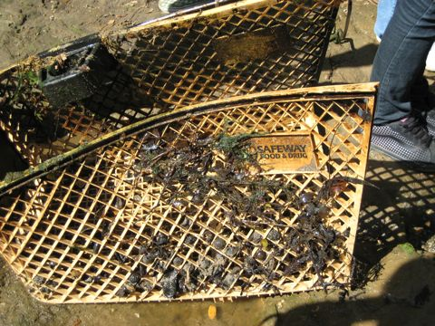
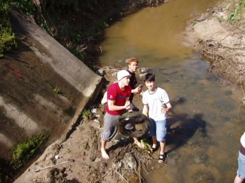
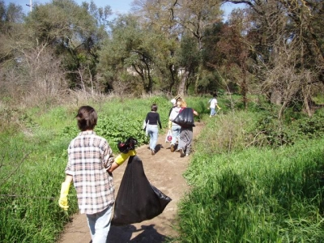
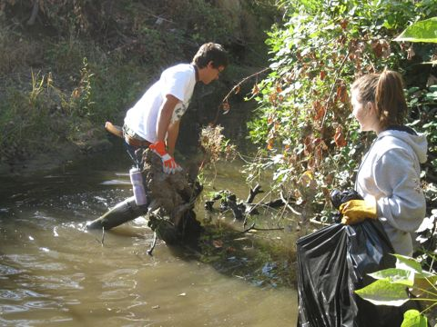
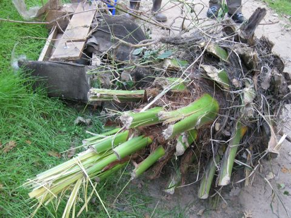

RESTORATION
Restoration is responsible for removing signs of human activity in the creek, especially through removal of foreign species, toxic materials, litter, and reintroduction of native species.
Restoration Students
Removing invasive species.
Restoration Students
removing a shopping cart from the creek
Restoration Students
Removing tires. What were they doing in the creek?
Restoration Students
Taking out the trash
Restoration Students
removing trash and more invasive species
Restoration Students
the palm tree is also an invasive species
At the creek, Restoration directly aids the creek by removing invasive species and monitoring the overall progress of the fragile ecosystem.
More than eleven invasive species are vastly spread throughout the creek, disturbing the equilibrium of the native plants and wildlife. Restoration removes these non-indigenous species, which include the Himalayan Blackberry, Red Sesbania, Arundo, Fan Palm, Ailanthus, Privet, Catalpa, Albizia (Silk Tree), Vinca, and more. All Restoration members attend training seminars, where they learn about the invasive and native species and how to effectively remove them. The goal of Restoration is not to simply remove the invasive plants, but eradicate them completely so the plants do not grow back the following year. This attitude exemplifies the dedication with which the Restoration team performs its duties.
The study is responsible for the removal of debris that creates dams throughout the creek as well. This helps with water flow and overall health of the creek.
Restoration also collects trash, which may be very dangerous to the creek. The team collects items such as matches, cigarette lighters, plastics, and other harmful waste. Restoration has set up a system for recycling any plastic bottles and aluminum cans found at the creek. This is just another way Restoration demonstrates commitment to preserving and improving the health of the environment.
In the Spring Restoration will be able to begin reintroducing native species. This will further the actual restoration of the creek and bring the study closer to the ultimate goal of the Arcade Creek Project; improving and maintaining the health of the creek.
STUDY FILES:
Restoration ProtocolState of Restoration Report 2012
Raw Data 2012
Data Analysis 2012